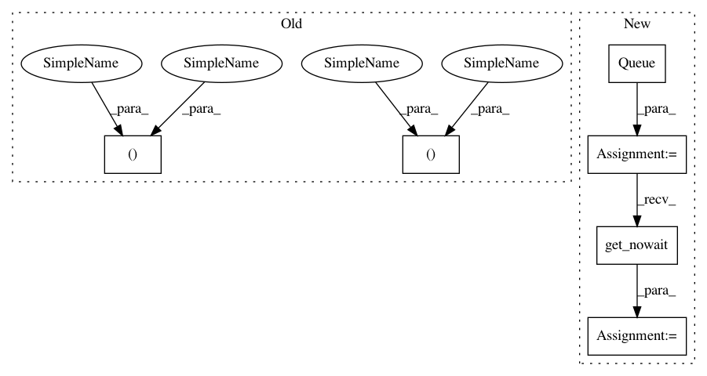

71a791cb71ef7080ea150152633a90e7821070af,tests/keras/applications/applications_test.py,,test_inceptionresnetv2_variable_input_channels,#,211
Before Change
global_image_data_format = K.image_data_format()
K.set_image_data_format("channels_first")
input_shape = (1, None, None)
model = applications.InceptionResNetV2(weights=None, include_top=False, input_shape=input_shape)
assert model.output_shape == (None, 1536, None, None)
input_shape = (4, None, None)
model = applications.InceptionResNetV2(weights=None, include_top=False, input_shape=input_shape)
assert model.output_shape == (None, 1536, None, None)
K.set_image_data_format("channels_last")
After Change
model = applications.InceptionResNetV2(weights=None, include_top=False, input_shape=input_shape)
queue.put(model.output_shape)
queue = Queue()
p = Process(target=target, args=(queue, (None, None, 1)))
p.start()
p.join()
assert not queue.empty(), "Model creation failed."
model_output_shape = queue.get_nowait()
assert model_output_shape == (None, None, None, 1536)
p = Process(target=target, args=(queue, (None, None, 4)))
p.start()
In pattern: SUPERPATTERN
Frequency: 3
Non-data size: 6
Instances
Project Name: keras-team/keras
Commit Name: 71a791cb71ef7080ea150152633a90e7821070af
Time: 2017-09-21
Author: myutwo150@users.noreply.github.com
File Name: tests/keras/applications/applications_test.py
Class Name:
Method Name: test_inceptionresnetv2_variable_input_channels
Project Name: keras-team/keras
Commit Name: 9a50d7bece2e09093f7eec251fc2be5736b131da
Time: 2018-01-09
Author: myutwo150@users.noreply.github.com
File Name: tests/keras/applications/applications_test.py
Class Name:
Method Name: test_densenet_variable_input_channels
Project Name: automl/auto-sklearn
Commit Name: 7d32843e55fca28d71828090e226bb83d5ac9f20
Time: 2016-02-11
Author: feurerm@informatik.uni-freiburg.de
File Name: autosklearn/smbo.py
Class Name: AutoMLSMBO
Method Name: eval_with_limits
Project Name: keras-team/keras
Commit Name: 71a791cb71ef7080ea150152633a90e7821070af
Time: 2017-09-21
Author: myutwo150@users.noreply.github.com
File Name: tests/keras/applications/applications_test.py
Class Name:
Method Name: test_inceptionresnetv2_variable_input_channels